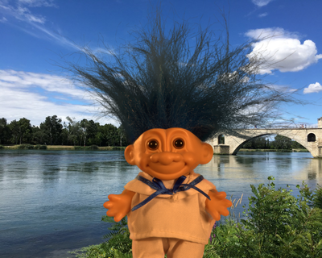

Jingwei Tang

Jingwei Tang (唐经纬)
Ph.D. Student
Computer Graphics Laboratory ETH Zürich CAB G 86.2 Universitätsstrasse 6 CH-8092 Zürich Switzerland
jingwei.tang(at)inf.ethz.ch
+41 (0) 44 632 07 56
Short Bio
In 2019, I joined the Computer Graphics Laboratory (CGL) as a Ph.D. student with Professor Markus Gross at ETH Zürich. In 2018, I received my M.Sc. degree in Computational Science and Engineering at at ETH Zürich. My B.Sc. degree in Physics was received in 2016 at Nanjing University.
My research interests lie in computer graphics and machine learning, especially using data-driven methods to solve physically-based fluid simulation problems.
Educations
Ph.D. / ETH Zürich
Computer Science
2019 - Present
M.Sc. / ETH Zürich
Computational Science and Engineering
2016 - 2018
B.Sc. / Nanjing University
Physics
2012 - 2016
News
Our learning-based sampling for natural matting paper has been accepted to CVPR 2019.
The pre-print will be made available soon. You can check out our results on alpha matting benchmark .
25 Feb 2019
I joined Computer Graphics Laboratory at ETH Zürich as a Ph.D. student.
I will be working on machine learning methods for physically-based fluid simulations.
01 Jan 2019
I finished my Master Thesis at Disney Research Zürich .
The thesis is on Data-driven methods for Image Matting. My supervisors are Yağız Aksoy, Dr. Tunç Aydın , Dr. Cengiz Öztireli and Prof. Markus Gross.
30 Aug 2018
Research Topics
Data-driven Fluid Simulation with Solid Boundaries
Our research focues on using data-driven methods to address persistent problems of physically-based simulations for fluid interacting with solid boundaries.
Data-driven Image Matting
The goal of natural image matting is the estimation of accurate opacities of a user-defined foreground object. We tackle this problem with data-driven methods. In particular, we developed a CNN-based matting pipeline that consists of sampling network to predict foreground and background colors and a matting network to predict alpha mattes.
